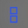

略作定义
所有谜题都可以这样描述：
- 谜题题板是在一个平面或空间曲面上的格线阵列。
- 谜题解答是无交叉的一笔画图形。
- 一笔画轨迹必须在题板给出的格线上。以圆点为起点，以方格阵列凸点为终点。
- 一笔画轨迹本身必须满足阵列中图形的限定条件。
- 一笔画轨迹将题板划分成一个或多个联通区域，每个联通区域必须满足阵列中图形的限定条件。
不同图形的限定含义
| 图形 | 位置 | 限定 | 图例 |
|---|---|---|---|
| 格线 | - | 一笔画路径。 | |
| 圆点 | 格线交点 | 一笔画起点。 | |
| 出口 | 边界格线交点延伸到图形外 | 一笔画终点。 | |
| 圆角方形 | 方格内 | 所在连通区域内不可出现其它颜色的圆角方形。 |  |
| 正六边形 | 格线交点或格线上 | 一笔画必须经过此点。黑色可由任一颜色一笔画轨迹经过；其它颜色必须由同色轨迹经过。 |  |
| 对称 | 题板整体是轴对称或中心对称的 | 一笔画出多条轨迹。对称性与题板本身相同。 | |
| 俄罗斯方块/ 多联骨牌 |
方格内 | 所在连通区域的形状必须可由其中的所有俄罗斯方块拼成。 |  |
| 空心俄罗斯方块/ 反多联骨牌 |
方格内 | 修正所在联通区域内的某块俄罗斯方块，将之挖去空心俄罗斯方块形状的一部分。 |  |
| 八角星/太阳 | 方格内 | 所在联通区域必须存在且仅有一个同一颜色的特定图形（圆角方形、八角星）。 | |
| 三通/倒置的Y | 方格内 | 去除所在联通区域内的一个未满足限定条件的图形。 |  |
| 三角 | 方格内 | 方格内有几个三角形表示在它周围，一笔画需要经过几条边。 |  |
可能的隐藏线索
- 与其它题板的位置关系。
- 投射到题板上的阴影。阻断或引导。
- 特定位置观察题板，题板前的景物。阻断或引导。
- 特定位置观察题板，题板后的景物。阻断或引导。
- 观察题板附近的特定景物，与题板图形有映射关系。
- 环境里的特定声音信号。
其它资源
- IGN 见证者 Wiki 上，关于谜题类型的介绍
- 优酷上，混沌王的实况视频
-
写 putty 的牛人 Simon Tatham 的全平台谜题集。
个人比较喜欢这个谜题系列。尤其是 Galaxies、Light Up、Loopy、Pattern、Pearl、Range、Signpost、Slant、Tents、Unequal（真的不是全部……）。
其中这两个与见证者中的谜题有共性：
-
关于多联骨牌：